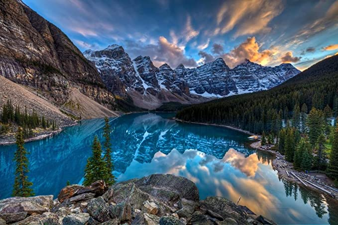

Lago Louise
Todos los lagos de glaciar de las Montañas Rocallosas de Canadá son hermosos, aunque algo tiene de especial Lake Louise que lo hace demasiado bueno para ser verdad.
Sin embargo, este poblado es real y aunque se sienta que está a un mundo de distancia de Calgary, es fácil llegar a él. Encontrar un diamante como este en las profundidades del Parque Nacional de Banff ciertamente aumenta el atractivo del lago.
Lake Louise es un famoso destino turístico, tanto en la temporada de esquí como en los meses del verano, y te ofrece bastantes actividades emocionantes o relajantes durante todo el año.
En el verano, puedes descansar en el resort o sal a acampar en el bosque. Si te gusta el excursionismo o montar a caballo, participa en una visita guiada para cruzar las veredas alrededor del lago, hasta que llegues al punto donde puedes ver el lago Peyto con su hermosa agua color turquesa.
Pasear en canoa es la mejor forma de explorar los lagos, porque el agua es demasiado fría para nadar.
En el invierno, Lake Louise tiene completa actividad, conforme cambia para acomodar a las multitudes de fanáticos de los deportes invernales. Lake Louise es hogar de algunas de las mejores pistas de esquí de Canadá.
Como te puedes divertir:
- En los alrededores del lago Louise hay varias rutas de senderismo que merece la pena realizar, y el Big Beehive es uno de sus recorridos estrella. El sendero recibe su nombre de un mirador desde donde se tienen unas vistas impresionantes. Eso sí, llegar allí requiere de cierto esfuerzo.
- Para comenzar este sendero hay que partir de orillas del Lake Louise. El camino sale casi frente al hotel Fairmont Château y desde el principio comienza a subir. El agua del lago irá cambiando de color a cada paso, haciéndose más intenso, y tras 2,7 kilómetros, llega la primera parada: Mirror Lake.
Aquí querrás tomarte unos minutos para descansar. No solo hay un pequeño lago muy fotogénico, sino que la montaña que tendrás frente a ti es el Big Beehive. Y sí, tendrás que subir hasta allí arriba si quieres tener las bonitas vistas que te mencionaba. Si decides comer algo aquí, ten cuidado con los chipmunks (especie de ardillas), ¡porque están al acecho!
Cuando retomes el camino y, tras apenas medio kilómetro, comenzarás a escuchar el sonido procedente de una casada: se trata de las aguas del lago Agnes
- Otra gran ruta de senderismo que puedes hacer desde el lago Louise es el Plain of the Six Glaciers, un trek que se adentra en un valle montañoso en el que solo habrá glaciares a tu alrededor
- Otra de las cosas que hacer en Lake Louise tiene que ver con otro lago, su vecino Moraine Lake.

Aunque ya he visitados varios lagos, ninguno se compara con lo maravilloso que es este, tan solo
admirar sus colores claros, sus grandes pinos que lo rodean, las montañas de fondo, el clima con el cambio de las
temporadas, en tan solo una foto me hace imaginar lo asombroso que sería estar parada en una lancha en el
centro de este gran lago.